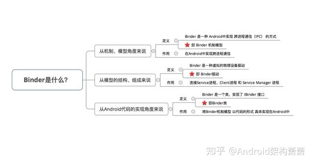
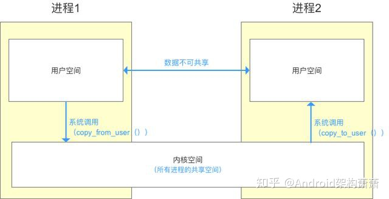
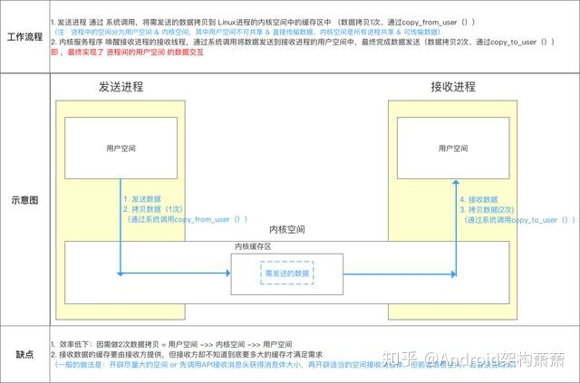
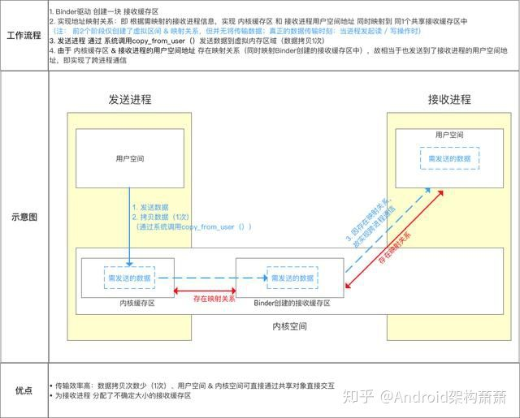
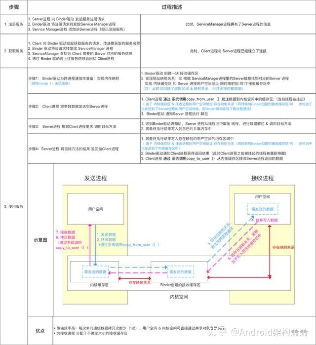
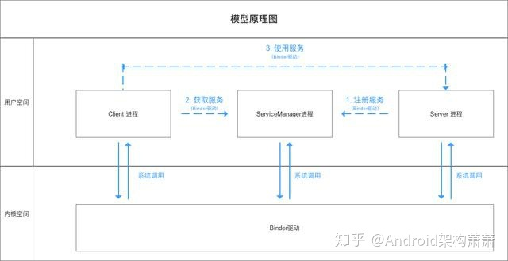
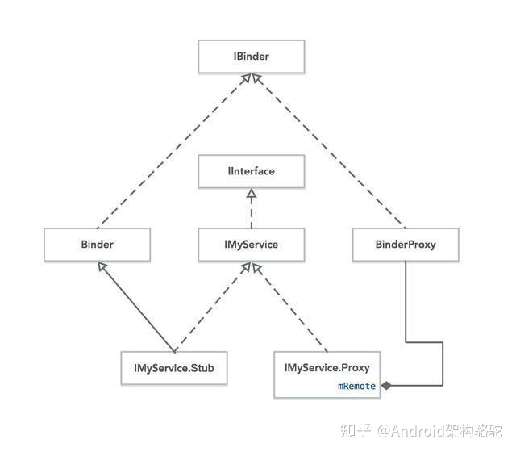
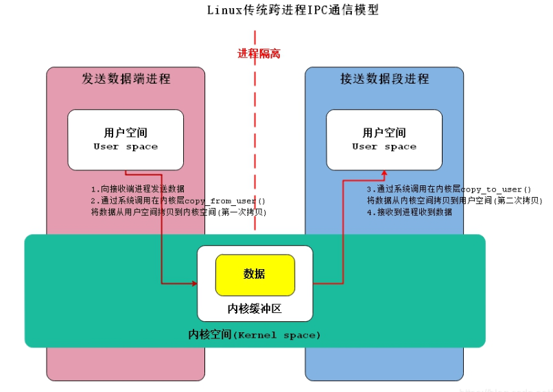
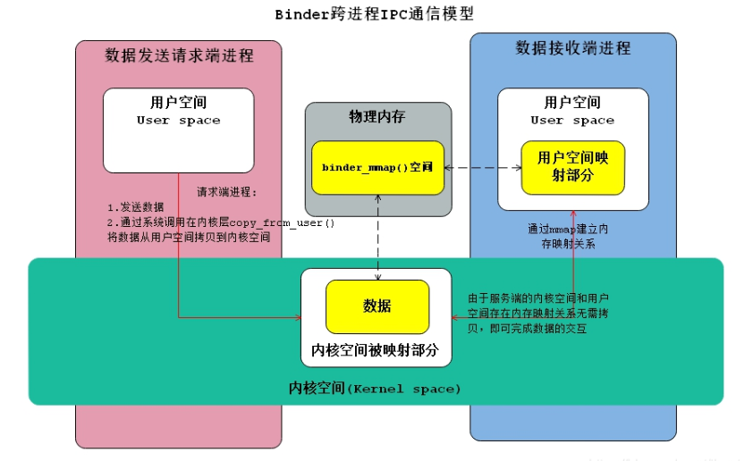

Binder
Binder的定义与作用

Binder跨进程通信机制
进程空间划分
- 一个进程空间分为 用户空间 & 内核空间（Kernel），即把进程内 用户 & 内核 隔离开来
二者区别： 1、进程间，用户空间的数据不可共享，所以用户空间 = 不可共享空间 2、进程间，内核空间的数据可共享，所以内核空间 = 可共享空间
所有进程共用1个内核空间
进程内 用户空间 & 内核空间 进行交互 需通过 系统调用，主要通过函数：
- copy_from_user（）：将用户空间的数据拷贝到内核空间
- copy_to_user（）：将内核空间的数据拷贝到用户空间

进程隔离 & 跨进程通信（ IPC ）
- 进程隔离为了保证 安全性 & 独立性，一个进程不能直接操作或者访问另一个进程，即Android的进程是相互独立、隔离的
- 跨进程通信（ IPC ）即进程间需进行数据交互、通信
- 跨进程通信的基本原理

而Binder的作用则是：连接 两个进程，实现了mmap()系统调用，主要负责 创建数据接收的缓存空间 & 管理数据接收缓存
注：传统的跨进程通信需拷贝数据2次，但Binder机制只需1次，主要是使用到了内存映射
跨进程通信核心原理

模型原理步骤说明

Client进程、Server进程 & Service Manager 进程之间的交互 都必须通过Binder驱动（使用 open 和 ioctl文件操作函数），而非直接交互
因为Client进程、Server进程 & Service Manager进程属于进程空间的用户空间，不可进行进程间交互。
Binder驱动 属于 进程空间的 内核空间，可进行进程间 & 进程内交互所以，原理图可表示为以下：

Binder请求的线程管理
Server进程会创建很多线程来处理Binder请求，Binder模型的线程管理 采用Binder驱动的线程池，并由Binder驱动自身进行管理，而不是由Server进程来管理的。
一个进程的Binder线程数默认最大是16，超过的请求会被阻塞等待空闲的Binder线程。
所以，在进程间通信时处理并发问题时，如使用ContentProvider时，它的CRUD（创建、检索、更新和删除）方法只能同时有16个线程同时工作。
安卓中实现Binder

AIDL生成的就是IMyService这个接口，而Stub和Proxy则是这个接口的两个内部类，分别是Binder和BinderProxy的子类（Proxy类虽然是用组合方式来持有BinderProxy的，但实际就是在直接用这个类，只不过做了一层封装，让其更易使用而已），Stub和Proxy都实现了IMyService。
IInterface是一个用于表达Service提供功能的一个契约，也就是说IInterface里有的方法，Service都能提供。只要拿到IInterface，就可以直接调用里面的方法。
Stub虽然实现了IMyService，但是没有实现里面的方法，它是一个抽象类，开发者需要自己子类化Stub去实现具体的功能。Proxy实现了IMyService，并且实现了里面的方法。
Stub适用于本地调用情况，如果Service运行在同一个线程，那就直接用Stub，因为它直接实现了Service提供的功能，不需要任何IPC过程。如果Service运行在其他进程，那客户端使用的就是Proxy，Proxy可以将参数封装后发送给Binder驱动，然后执行一系列IPC操作最后再取出结果返回。
当客户端的请求提供Proxy发送出去时，Service需要利用Stub接收请求做出响应。Stub继承自Binder，Binder有一个onTransact方法，Stub重写了这个函数，这个函数三个重要参数：int code、Parcel data、Parcel reply，分别对应了被调函数编号、参数包、响应包。当Proxy发起了一个请求，服务端中相应的响应线程就会通过JNI调用到Stub类，然后执行里面的execTransact方法，进而转到onTransact方法。
onTransact:
@Override
public boolean onTransact(int code, Parcel data, Parcel reply, int flags) throws RemoteException {
switch (code) {
case INTERFACE_TRANSACTION:
{
reply.writeString(DESCRIPTOR);
return true;
}
case TRANSACTION_increaseCounter:
{
data.enforceInterface(DESCRIPTOR);
int _arg0;
_arg0 = data.readInt();
int _result = this.increaseCounter(_arg0);
reply.writeNoException();
reply.writeInt(_result);
return true;
}
}
return super.onTransact(code, data, reply, flags);
}
可以看到onTransact就是根据传过来的数据包做相应的操作，然后把结果写回数据包。Binder驱动会帮我们做好数据包的分发工作。这段代码是运行再Service本地进程中的，它可以直接调用实现好的Stub类中的相关方法（本例中为increaseCounter方法）。
Proxy中的incraseCounter:
@Override
public int increaseCounter(int increment) throws RemoteException{
Parcel _data = Parcel.obtain();
Parcel _reply = Parcel.obtain();
int _result;
try {
_data.writeInterfaceToken(DESCRIPTOR);
_data.writeInt(increment);
mRemote.transact(Stub.TRANSACTION_increaseCounter, _data, _reply, 0);
_reply.readException();
_result = _reply.readInt();
}finally {
_reply.recycle();
_data.recycle();
}
return _result;
}
Service里面有一个onBind方法，里面返回了实现好的Stub类，而客户端bindService时拿到的又是一个IBinder对象，我们每次只需要调用Stub的asInterface静态方法，把这个IBinder对象传进去就能拿到Stub类或者Proxy类了。
asInterface:
public static IBackgroundService asInterface(IBinder obj){
if ((obj==null)) {
return null;
}
IInterface iin = obj.queryLocalInterface(DESCRIPTOR);
if (((iin != null) && (iin instanceof IBackgroundService))) {
return ((IBackgroundService) iin);
}
return new IBackgroundService.Stub.Proxy(obj);
}
queryLocalIInterface:
public IInterface queryLocalInterface(String descriptor) {
if (mDescriptor.equals(descriptor)) {
return mOwner;
}
return null;
}
owner和descriptor都是在Stub的构造函数中被设置的。
如果 Service 运行在同一进程，那么客户端拿到的 IBinder 就是 Stub 类，而 Stub 的 queryLocalInterface 又会返回自己；而 Service 运行在单独进程中时，客户端拿到的 IBinder 就是系统提供好的 BinderProxy，BinderProxy 中的 queryLocalInterface 默认直接返回 null，根据代码，asInterface 就会构造一个 Proxy 返回给客户端。
自己利用Binder进行IPC
Service中的onBinder这样实现:
@Nullable
@Override
public IBinder onBind(Intent intent){
return new Binder(){
@Override
protected boolean onTransact(int code,Parcel data,Parcel reply,int flags) throws RemoteException {
if(code == FIRST_CALL_TRANSACTION){
int i = data.readInt();
reply.writeNoException();
reply.writeInt(2*i);
return true;
}
return super.onTransact(code,data,reply,flags);
}
};
}
客户端：
private ServiceConnection connection = new ServiceConnection(){
@Override
public void onServiceConnected(ComponentName name,IBinder service){
if(!(service instanceof IBackgroundService.Stub)){
Parcel data = Parcel.obtain();
Parcel reply = Parcel.obtain();
try{
data.writeInt(3);
service.transact(Binder.FIRST_CALL_TRANSACTION,data,reply,0);
reply.readException();
Log.i("Client",String.valueOf(reply.readInt()));
}catch(RemoteException e){
e.printStackTrace();
}finally{
data.recycle();
reply.recycle();
}
}
}
}
onTransact 方法
作用：
- 验证请求的合法性：
onTransact方法首先会检查传入的事务代码（transaction code）是否合法，以防止恶意或非法的调用。 - 执行请求的操作：如果请求合法，
onTransact方法会根据传入的事务代码执行相应的操作。 - 响应调用者：处理完请求后，
onTransact方法会返回一个boolean值，指示操作是否成功执行。
方法签名：
javaCopy code
protected boolean onTransact(int code, Parcel data, Parcel reply, int flags) throws RemoteException;
code：事务代码，用于标识请求的具体操作。data：输入参数，包含客户端发送的数据。reply：输出参数，用于存储要返回给客户端的数据。flags：标志，通常为 0。
示例：
假设有一个远程服务 IRemoteService，其中定义了一个方法 add(int a, int b)，对应的事务代码为 TRANSACTION_add（通常是一个常量）：
javaCopy codepublic interface IRemoteService extends IInterface {
static final int TRANSACTION_add = (android.os.IBinder.FIRST_CALL_TRANSACTION + 0);
int add(int a, int b) throws RemoteException;
}
当客户端调用这个方法时，Binder 会调用服务端 IRemoteService 的 onTransact 方法：
javaCopy code@Override
protected boolean onTransact(int code, Parcel data, Parcel reply, int flags) throws RemoteException {
switch (code) {
case TRANSACTION_add:
data.enforceInterface(DESCRIPTOR);
int _arg0;
_arg0 = data.readInt();
int _arg1;
_arg1 = data.readInt();
int _result = this.add(_arg0, _arg1);
reply.writeNoException();
reply.writeInt(_result);
return true;
}
return super.onTransact(code, data, reply, flags);
}
在上述代码中：
code是TRANSACTION_add，表示客户端请求执行add方法。data包含两个整数参数_arg0和_arg1，分别是客户端传递的两个整数值。reply用于存储add方法的返回值_result。
注意：
onTransact方法通常不应该在客户端直接调用。它是由系统自动调用的，用于处理客户端发送的请求。- 在实现自定义
Binder类时，开发者需要覆写onTransact方法来处理特定的事务代码，并执行相应的操作。
总结：
Binder 的 onTransact 方法是 Android 系统用于处理跨进程通信请求的核心方法。它负责验证请求的合法性、执行请求的操作，并响应调用者。开发者在实现远程服务时，需要在 onTransact 方法中处理特定的事务代码，以实现跨进程方法调用。
Binder 的 onTransact 方法是 Android 系统用于处理跨进程通信（IPC，Inter-Process Communication）请求的核心方法。当一个客户端组件（如 Activity、Service 或其他应用程序）尝试调用一个远程服务的方法时，实际上是通过 Binder 进行 IPC 通信的。以下是关于 onTransact 方法的详细解释：
onTransact 方法
作用：
- 验证请求的合法性：
onTransact方法首先会检查传入的事务代码（transaction code）是否合法，以防止恶意或非法的调用。 - 执行请求的操作：如果请求合法，
onTransact方法会根据传入的事务代码执行相应的操作。 - 响应调用者：处理完请求后，
onTransact方法会返回一个boolean值，指示操作是否成功执行。
方法签名：
javaCopy code
protected boolean onTransact(int code, Parcel data, Parcel reply, int flags) throws RemoteException;
code：事务代码，用于标识请求的具体操作。data：输入参数，包含客户端发送的数据。reply：输出参数，用于存储要返回给客户端的数据。flags：标志，通常为 0。
示例：
假设有一个远程服务 IRemoteService，其中定义了一个方法 add(int a, int b)，对应的事务代码为 TRANSACTION_add（通常是一个常量）：
javaCopy codepublic interface IRemoteService extends IInterface {
static final int TRANSACTION_add = (android.os.IBinder.FIRST_CALL_TRANSACTION + 0);
int add(int a, int b) throws RemoteException;
}
当客户端调用这个方法时，Binder 会调用服务端 IRemoteService 的 onTransact 方法：
javaCopy code@Override
protected boolean onTransact(int code, Parcel data, Parcel reply, int flags) throws RemoteException {
switch (code) {
case TRANSACTION_add:
data.enforceInterface(DESCRIPTOR);
int _arg0;
_arg0 = data.readInt();
int _arg1;
_arg1 = data.readInt();
int _result = this.add(_arg0, _arg1);
reply.writeNoException();
reply.writeInt(_result);
return true;
}
return super.onTransact(code, data, reply, flags);
}
在上述代码中：
code是TRANSACTION_add，表示客户端请求执行add方法。data包含两个整数参数_arg0和_arg1，分别是客户端传递的两个整数值。reply用于存储add方法的返回值_result。
注意：
onTransact方法通常不应该在客户端直接调用。它是由系统自动调用的，用于处理客户端发送的请求。- 在实现自定义
Binder类时，开发者需要覆写onTransact方法来处理特定的事务代码，并执行相应的操作。
总结：
Binder 的 onTransact 方法是 Android 系统用于处理跨进程通信请求的核心方法。它负责验证请求的合法性、执行请求的操作，并响应调用者。开发者在实现远程服务时，需要在 onTransact 方法中处理特定的事务代码，以实现跨进程方法调用。
为什么Binder通信只需要拷贝一次数据？
Linux中的进程是被隔离不能直接进行通信的，A进程向B进程传递数据，需要先将数据从A的用户空间拷贝到内核空间，然后从内核空间拷贝到B的用户空间。

Binder通信采用了mmap()函数，将内核空间和接收方用户空间的数据缓存区之间做了一层内存映射，这样，A进程向B进程传递数据，只需要从A的用户空间拷贝到B的用户空间数据缓存区在内核空间中的内存映射，就相当于直接拷贝到了B的用户空间。
由于Binder是双向通信，还会有A的用户空间数据缓存区在内核空间中的内存映射

sharedUserId的使用
一. 当A和B共用一个sharedUserId时,或者同时具有某种系统权限.A和B能达到互相唤醒的效果.
- 使用绑定服务的方式传递AIDL接口
- A和B互相绑定一个服务接口,那么任何一方进程死的时候,另一方都会感知到.
- B绑定A,A不绑定B时,A进程死亡时,B能感知;B进程死亡,A感知不到.(如果B绑定A后,利用上面的IIpcInvoke接口向A提供了ICallback接口,A对这个ICallback做了"死亡绑定",那么也能感知到B进程的死亡状态)
Binder自带的线程管理
- 这个Binder线程池不是我们平时理解的那个"线程池",Binder线程池是不能处理耗时任务的,要处理的话,还是需要在服务端或者在客户端使用子线程去处理的. Binder线程池更好的理解是把它理解成一个口(如高速公路上收费站的收费口).Binder就是个"收费站",收费站的各个收费口就是Binder线程池, 一个进程中的Binder(收费站)最多有"16"个"收费口".也就是说这个"收费站"能同时让16辆车经过而不会发生阻塞,当这16辆车在经过同时, 在第17辆车到来时,这第17辆车只能等着,等到前面16辆车中的其中一辆车完全经过收费口时,第17辆车才允许经过.
- Binder也不是一创建的时候就马上把16个"收费口"一起创建出来的.它是一个一个创建的,用到时才创建的,但是最多只能创建16个"收费口". 如果现在已经创建了5个"收费口",这5个口对于处理事务已经够用了,那就不会再创建第6个"收费口"了.直到来不及处理的时候才会再创建.